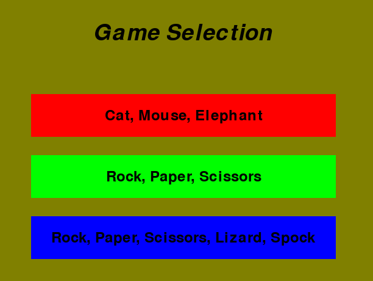

Stanford Code in Place Python Project with Digital Jersey
During Nov 2024 to Feb 2025 learned Python from the Stanford Code in Place platform with Digital Jersey.
This is the project where I created a Rock, Paper, Scissors game with a variety of options.
View Code on GitHub